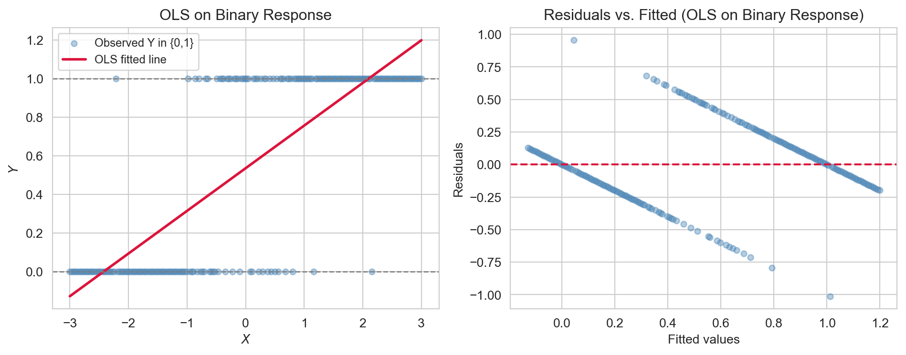
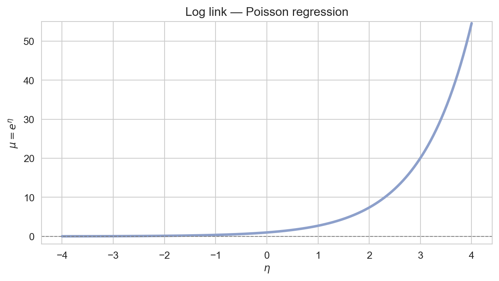

In this note we define the Generalized Linear Models, link functions and several specific implementations including logistic regression and Poisson regression.
Author
John Robin Inston
Published
May 13, 2026
Modified
May 13, 2026
ImportantLearning Objectives
Understand the limitations of linear regression when the response is not continuous.
Introduce the Generalized Linear Model (GLM) framework: exponential family, link functions, and maximum likelihood estimation.
Libraries and Styling
# Librariesimport numpy as npimport pandas as pdimport matplotlib.pyplot as pltimport seaborn as snsfrom scipy.stats import norm, binomfrom scipy.special import expit # the logistic (sigmoid) functionimport statsmodels.formula.api as smfimport statsmodels.api as smfrom statsmodels.stats.anova import anova_lmfrom sklearn.metrics import ( confusion_matrix, ConfusionMatrixDisplay, roc_curve, roc_auc_score)# Figure stylingsns.set_style('whitegrid')sns.set_palette('Set2')
The Limits of Linear Regression
The MLR model assumes \(Y_i \sim \mathcal{N}(\mu_i, \sigma^2)\) with \(\mu_i = \mathbf{x}_i^\top \boldsymbol{\beta}\), so the mean is modelled as an unrestricted linear combination of predictors. This breaks down for many common response types:
Common response types incompatable with MLR.
Response type
Example
Problem with linear regression
Binary
Patient survived / died
Predictions outside \([0, 1]\); errors not normal
Count
Number of insurance claims
Must be non-negative; variance grows with mean
Proportion
Percentage of votes won
Bounded in \([0, 1]\); heteroscedastic
Positive continuous
Hospital length of stay
Right-skewed; errors non-normal
As a concrete example, suppose we want to predict whether a Titanic passenger survived (\(Y_i \in \{0,1\}\)) from their characteristics. We want to model \(P(Y_i = 1 \mid \mathbf{x}_i)\), but fitting OLS directly produces predictions outside \([0,1]\) and clearly non-normal residuals.

OLS fitted to a binary outcome: predicted values fall outside [0, 1] for extreme predictor values, and the residuals are clearly non-normal.
The Generalized Linear Model
ImportantGeneralized Linear Model (GLM)
A GLM extends linear regression by relaxing the normality assumption. It has three components:
Random component: the response \(Y_i\) follows a distribution from the exponential family with mean \(\mu_i = \mathbb{E}[Y_i]\).
Systematic component: a linear predictor \(\eta_i = \mathbf{x}_i^\top \boldsymbol{\beta}\).
Link function\(g\): connects the mean to the linear predictor, \(g(\mu_i) = \eta_i\).
The key idea is that we no longer model \(\mu_i\) directly as a linear combination. Instead we model a transformation of \(\mu_i\) linearly: \(g(\mu_i) = \eta_i = \mathbf{x}_i^\top \boldsymbol{\beta}\). The link function ensures that \(\mu_i\) stays in the valid range for the chosen distribution.
The Exponential Family
A distribution belongs to the exponential family if its probability density/mass function can be written as
where \(\theta\) is the canonical parameter, \(\phi\) is the dispersion parameter, and \(b(\cdot)\), \(a(\cdot)\), \(c(\cdot)\) are known functions. Two important properties follow: \(\mu = \mathbb{E}[Y] = b'(\theta)\) and \(\text{Var}(Y) = b''(\theta)\,a(\phi)\) — variance is a function of the mean.
Distribution
Response type
Canonical link \(g(\mu)\)
Normal
Continuous \((-\infty, \infty)\)
Identity: \(g(\mu) = \mu\)
Bernoulli/Binomial
Binary / proportion \([0,1]\)
Logit: \(g(\mu) = \log\frac{\mu}{1-\mu}\)
Poisson
Count \(\{0, 1, 2, \ldots\}\)
Log: \(g(\mu) = \log\mu\)
Gamma
Positive continuous \((0, \infty)\)
Inverse: \(g(\mu) = 1/\mu\)
The canonical link is the natural choice derived from the exponential family form and is typically used as a default, though other links can be used if they make scientific sense.
Identity link: \(g(\mu) = \mu\). The mean is modelled directly as the linear predictor, with no constraint — appropriate for continuous, unbounded responses.
Logit link: \(g(\mu) = \log(\mu / (1 - \mu))\). The inverse is the logistic function, which squashes the linear predictor into \((0, 1)\) — appropriate for binary responses.

Log link: \(g(\mu) = \log \mu\). The inverse is the exponential function, which maps the linear predictor to a positive mean — appropriate for count responses.
Estimation: Maximum Likelihood
OLS minimises the sum of squared residuals, which is optimal when errors are Gaussian. For non-Gaussian responses, GLMs are estimated by maximising the log-likelihood:
There is no closed-form solution in general, so we use iteratively reweighted least squares (IRLS). At the current estimate \(\boldsymbol{\beta}^{(t)}\), IRLS computes:
repeating until convergence. When applied to the Normal family with the identity link, \(w_i = 1\) for all \(i\) and \(z_i = y_i\) — IRLS reduces to a single step of ordinary least squares. statsmodels handles this automatically.
Deviance and Model Comparison
ImportantDeviance
The deviance of a fitted GLM is: \[D = 2\left[\ell(\text{saturated model}) - \ell(\hat{\boldsymbol{\beta}})\right],\] where the saturated model fits each observation perfectly.
Deviance is the GLM analogue of the residual sum of squares. The null deviance (\(D_0\)) measures fit of the intercept-only model; the residual deviance (\(D\)) measures fit of the fitted model. A large drop \(D_0 - D\) indicates the predictors are useful.
To test whether \(q\) additional parameters significantly improve fit, we use the likelihood ratio test (LRT):
Reject \(H_0: \beta_{p-q+1} = \cdots = \beta_p = 0\) at level \(\alpha\) if \(G^2 > \chi^2_{q,\,1-\alpha}\). This is the GLM analogue of the partial \(F\)-test; for \(q=1\) it is asymptotically equivalent to the Wald \(z\)-test but preferred in small samples.